About books
I have been reading books since I can remember. My father always encouraged me to do so, so we can say that I got this passion thanks to him. I just love to grab a book, a cup of tea (or cold drink, depending on the season) and let my mind wander. I sometimes get reading slumps, like every reader I assume, but I never actually gave up on it.
My personal book recommendations
I'll try to recommend books from different genres, so that you'll hopefully find your cup of tea!
Click on a cover to find it on Amazon.
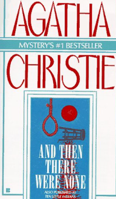
And Then There Were None
Agatha Christie
MysteryMy personal favourite of hers — perfect if you like thriller/mystery.
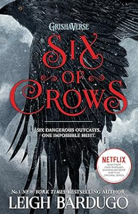
Six of Crows
Leigh Bardugo
FantasyA bit tricky to get into at first, but absolutely worth it.
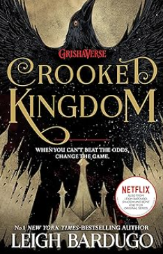
Crooked Kingdom
Leigh Bardugo
FantasyThe sequel — equally brilliant. Don't skip Six of Crows first!
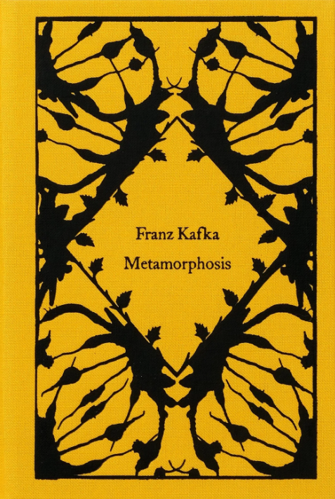
The Metamorphosis
Franz Kafka
ClassicA completely different vibe — great if you enjoy philosophy and metaphor.
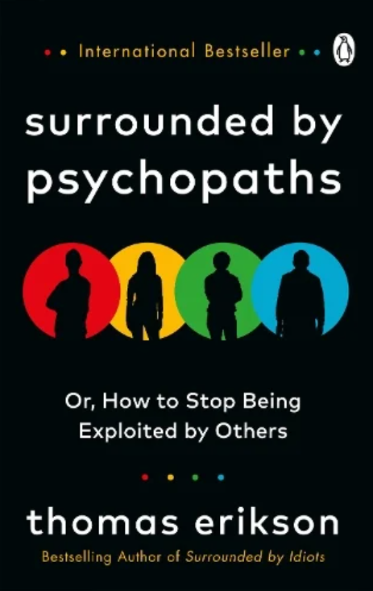
Surrounded by Psychopaths
Thomas Erikson
PsychologySuper interesting content about personality types. Highly recommend.
"It is a truth universally acknowledged that a reader in possession of a good book must be in want of another."— A paraphrase that every bookworm can relate to
My most recent reads
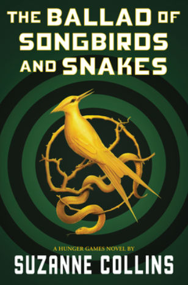
The Ballad of Songbirds and Snakes
Suzanne Collins
DystopiaFollows young President Snow. So many Hunger Games references; I loved it.
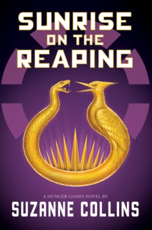
Sunrise on the Reaping
Suzanne Collins
DystopiaCollins' most recent — Haymitch as the main character, brilliant hidden messages woven throughout.
My current read
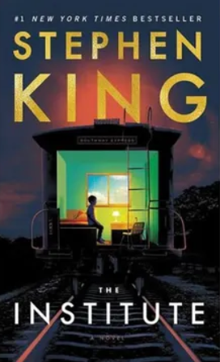
The Institute
Still halfway through — and I love it so far. I've always wanted to read Stephen King and chose this one because of its Goodreads rating. Not disappointed.
Horror / ThrillerBooks on my TBR
My favourite quotes from the books above
I have regrouped below some of my all-time favourite quotes from the books above
I hope you will like them as much as I do.
CLICK TO FLIP
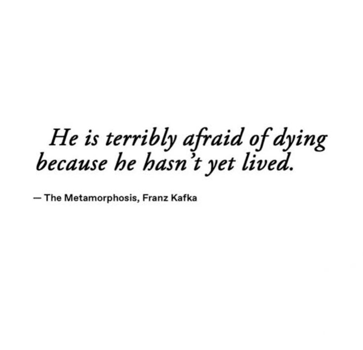
This line stopped me cold the first time I read it. It's a quiet warning to stop postponing the life you actually want to live.
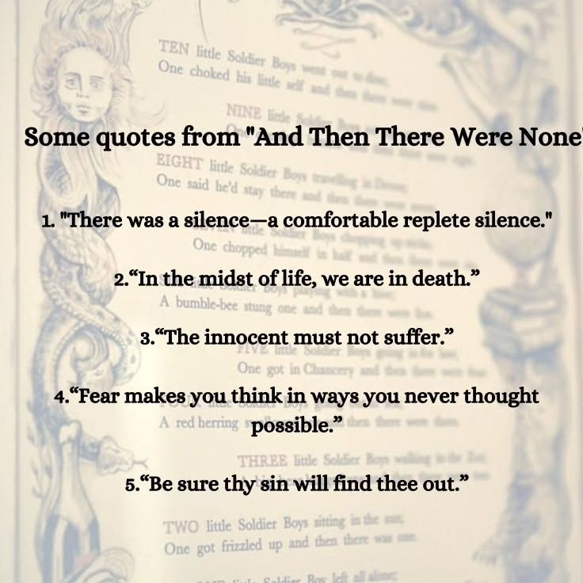
Christie wrote these lines decades ago yet they feel chillingly current. The simplicity of each one is exactly what makes them impossible to forget.
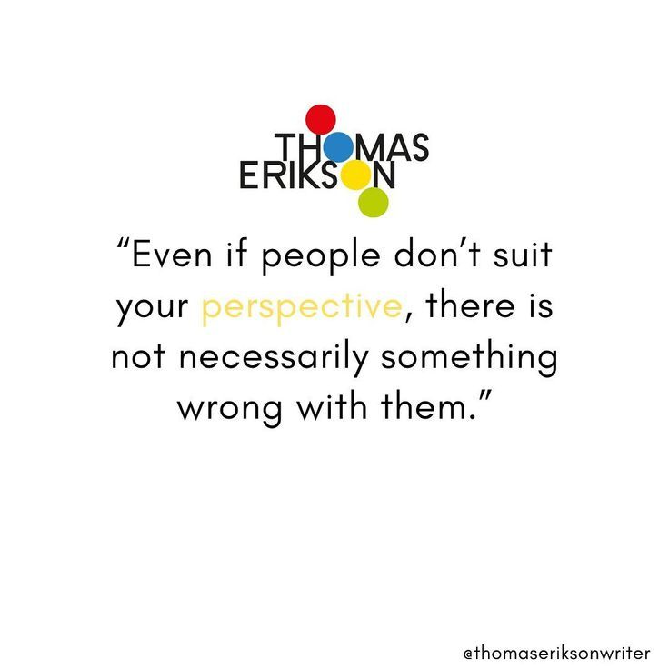
A gentle reminder that difference isn't a flaw, it's just humanity in all its variety. This one changed how I approach people I initially find difficult.
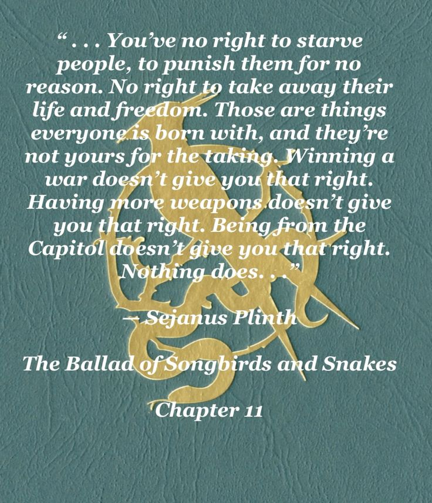
Sejanus says what the whole series dances around but never quite states so plainly. This speech broke my heart and made him my favourite character instantly.
Bardugo packs so much courage into four words. It reminds me that honesty, however uncomfortable, is always the kinder choice in the long run.
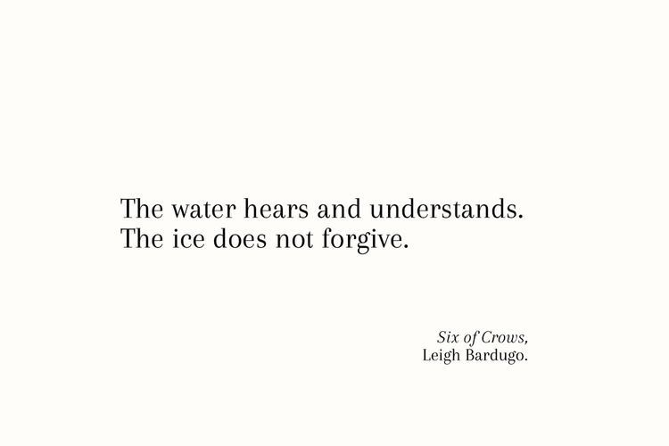
Two sentences that feel like an ancient proverb but hit like a plot twist. Bardugo's world-building lives in lines like this — mythic, cold, and unforgettable.